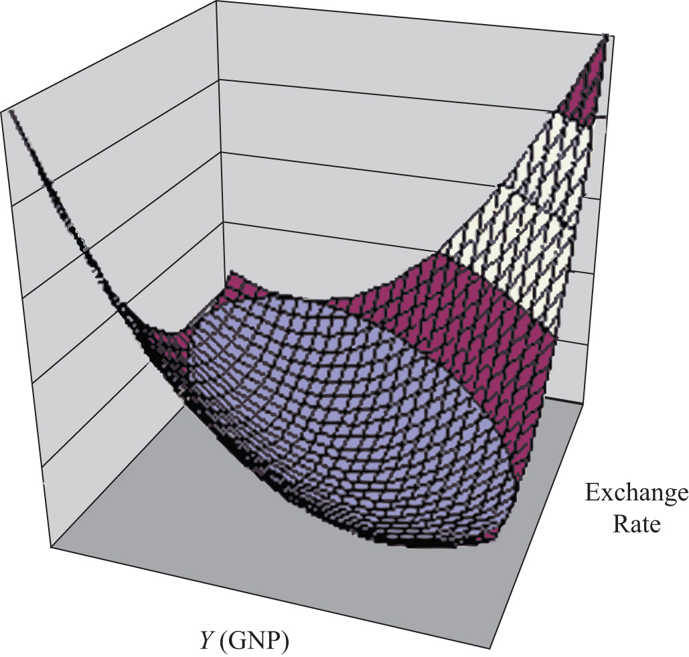

The DD curve represents the set of equilibriums in the goods and services (G&S) market. It describes an equilibrium gross national product (GNP) level for each and every exchange rate that may prevail. Due to the assumption that firms respond to excess demand by increasing supply (and to excess supply by decreasing supply), GNP rises or falls until the economy is in equilibrium on the DD curve.
The AA curve represents the set of equilibriums in the asset market. It indicates an equilibrium exchange rate for each and every GNP level that might prevail. Due to the assumption that investors will demand foreign currency when the foreign rate of return exceeds the domestic return and that they will supply foreign currency when the domestic rate of return exceeds the foreign return, the exchange rate will rise or fall until the economy is in equilibrium on the AA curve.
Since both the G&S market and the asset markets are operating concurrently, equilibriums in both markets can only occur where the DD curve intersects the AA curve. This is shown in Figure 20.7 "AA-DD Superequilibrium" at point F, with equilibrium GNP (_$) and exchange rate (Ê$/£). It is worth emphasizing that at point F, the three markets—that is, the G&S market, the money market, and the foreign exchange market—are in equilibrium simultaneously. For this reason, point F is more than a plain old equilibrium; instead it is a superequilibrium.
Figure 20.7 AA-DD Superequilibrium

The superequilibrium point is where we would expect behavioral responses by firms, households, and investors to move the exchange rate and GNP level, assuming the exogenous variables remain fixed at their original levels and assuming sufficient time is allowed for adjustment to the equilibrium to take place.
The equilibrium at F is like the lowest point of two intersecting valleys that reach their combined lowest point at a pool where the two valleys meet. A 3-D rendition of this is shown in Figure 20.8 "A 3-D AA-DD Depiction". The steepness of the valleys is meant to represent the speed of adjustment. Thus the AA valley is drawn much steeper than the DD valley to reflect the much more rapid adjustment in the asset markets in comparison to goods market adjustment. Anytime the economy is away from the equilibrium, forces will act to move it to the pool in the center. However, as will be shown later, adjustment to the AA curve will occur much faster than adjustment to the DD curve.
Figure 20.8 A 3-D AA-DD Depiction
Jeopardy Questions. As in the popular television game show, you are given an answer to a question and you must respond with the question. For example, if the answer is “a tax on imports,” then the correct question is “What is a tariff?”